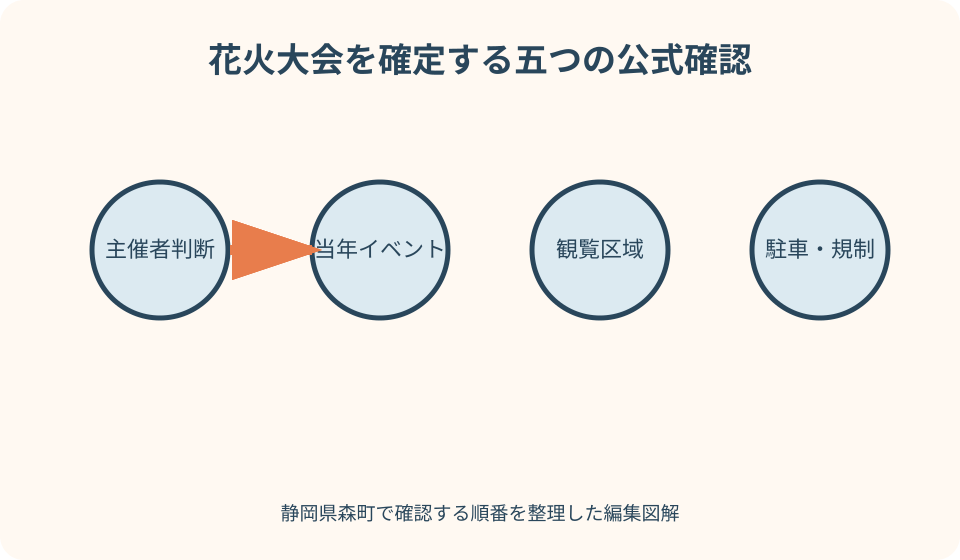
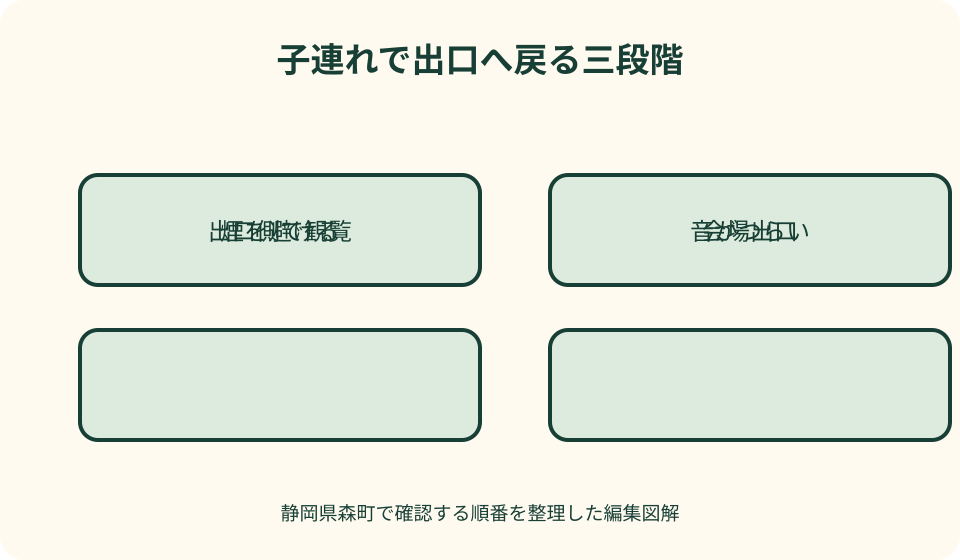

花火大会・夏・夜間イベント｜最終確認 2026-08-10
静岡県森町の納涼花火大会を確認する｜開催判断・観覧・交通・帰路
森町納涼花火大会は、過去に太田川周辺で開催され、観光協会は森町商工会を主催者として案内しています。ただし、同じ季節に過去記事が検索されても、今年の開催を意味しません。河川沿いの夜間催事だからこそ、開催可否、観覧できる区域、雨と河川の安全、交通規制、暗い帰路を一つずつ当年資料で確定します。

編集イラスト今年開催されるかを最初に確かめる
検索結果には前年以前の観光協会ページ、町の広報、参加者の記事が残ります。タイトル中の年と公開日を見ずに、今年も同じ日程と判断しません。
最上位の確認先は主催者である森町商工会の当年告知です。『開催予定』の段階と、最終的な実施決定、中止・延期の発表を区別します。
観光協会の当年イベントページは、会場、主催者、問合せ先を整理する入口です。ページ自身も内容変更の可能性を示すため、最終判断は主催者へ戻ります。
森町公式の広報や町長のお知らせに開催案内が載った年もあります。町の発信は確認材料ですが、開催年が違う記事を現在の根拠にしません。
予定表には、開催日ではなく『主催者確認済み』『最終判断待ち』の欄を作ります。情報が出る前に変更不能な交通や宿泊を手配しないことが基本です。
開催・中止・延期の言葉を分ける
小雨決行、荒天中止、順延、延期は別の条件です。当年ページにどの語が使われ、代替日があるのか、同じ資料内で確認します。
『予定』は実施確定ではありません。協賛募集、駐車場案内、観光ページが公開されていても、天候や河川状況で当日判断が変わる可能性があります。
中止の場合、露店や交通規制もすべて同じ判断になるとは限りません。会場へ行けば別の催しが残ると推測せず、主催者の本文を読みます。
延期や順延が示された場合も、自分の交通、駐車、警備、観覧区域が同じとは限りません。代替日の新しい案内を待ちます。
発表先をブックマークし、出発前に更新時刻を確認します。SNSの共有画像だけでなく、リンク先の本文が最新かを見ます。
会場名と観覧区域は同じではない
過去回では太田川親水公園が会場として案内されています。しかし会場名は、芝生、堤防、河川敷、周辺道路のすべてを観覧自由とする表現ではありません。
当年の会場図で、一般観覧区域、立入禁止、打上げ区域、緊急通路、露店、トイレ、出入口を確認します。図がなければ主催者へ公開予定を尋ねます。
堤防や河川管理用道路は、救急、消防、運営車両の通行に使われる場合があります。人が少なく見えても柵や係員の外側へ入りません。
河原の中州、水際、橋上、橋のたもとを『穴場』として勧めません。立入可否、増水、交通、通路確保を確認できない場所は観覧候補から外します。
観覧場所は花火の正面より出口から選びます。終演後に駅、駐車場、集合地点へ進める方向を確認し、奥へ詰めすぎない位置を取ります。
私有地・農地・店舗駐車場へ入らない
高い場所、空き地、畑の縁、店舗駐車場から花火が見えそうでも、所有者が一般観覧を許可した根拠にはなりません。
私道や住宅前へ三脚・椅子を置くと、住民の出入りと緊急車両を妨げます。短時間でも道路へ張り出して場所取りをしません。
買い物をすれば店舗駐車場へ長時間停めてよいとも限りません。営業時間、利用者専用、花火観覧禁止の表示に従います。
農地へ足を入れる、あぜに座る、作物へ照明を当てる行為は、景観撮影ではなく管理地への侵入になります。公式観覧区域だけを使います。
知人宅から見る場合も、周辺道路の規制、車の駐車、騒音、ごみを確認します。個人の許可が公共道路の通行許可になるわけではありません。
交通規制と駐車は主催者の当年図を見る
森町商工会は花火大会の駐車案内を別記事として出す場合があります。開催告知だけで車の行先を決めず、訪問年の駐車図を探します。
指定駐車場、利用開始・終了、進入方向、会場までの徒歩を確認します。別の森町イベントで使われた役場や河川敷の駐車地図を転用しません。
交通規制図では通行止め、進入禁止、一方通行、歩行者経路、規制時刻を読みます。開始前に入れば区域内へ停められるという解釈はしません。
満車時は路肩で待たず、主催者が示す第二候補へ移ります。非指定の施設、学校、会社、病院へ駐車しません。
帰りの出庫は歩行者と重なります。花火終了直後に車を動かすことより、警備員の誘導と歩行者が落ち着くまで待つことを優先します。

公共交通は夜の帰宅から逆算する
花火会場への最寄り駅や停留所は当年の主催者案内で確認します。過去の会場と同じだと分かってから、天浜線やバスの経路を作ります。
天浜線を使う人は、訪問日の帰り列車を二つ選びます。花火終了、観覧区域から出口、人混み、駅までの徒歩を引いて移動開始時刻を決めます。
大会のため臨時列車や増便があると推測しません。天浜線公式に特別運行が掲載されていなければ通常の訪問日ダイヤを使います。
町営・路線バスは夜まで走るとは限りません。日中に会場へ来られても帰り便がない場合があるため、行きと帰りを別々に確認します。
タクシーは規制区域内へ迎えに来られない可能性があります。予約可否、乗車地点、混雑時の待ち時間を事業者へ聞き、終演直後の配車だけに依存しません。
子連れは音・煙・暗さから退出できる位置へ
花火の大きな音を楽しめる子と、驚いて動けなくなる子がいます。過去に平気だった年齢でも当日の体調で変わるため、耳を守る用品と退出案を準備します。
打上げ地点に近いほど良いと考えず、出口へ移りやすく、音や煙がつらければ距離を取れる観覧位置を選びます。
煙は風向きで流れます。子どもが咳、目の痛み、息苦しさを訴えたら、写真を撮ってからではなく直ちに風上または会場外へ移ります。
暗い河川敷では子どもの靴、裾、迷子札、手をつなぐ方法を確認します。光る玩具だけを目印にせず、保護者全員が服装を覚えます。
ベビーカーは芝、砂利、人波、規制柵で動きにくくなります。利用可能な区域、預け場所、授乳・おむつ替え、退出路を主催者へ確認します。
最後の大玉まで見ることを家族の必須にしません。眠気、音への恐怖、暑さが出たら、混雑のピーク前に駅や車へ戻ります。
音に敏感な人・ペット・近隣への配慮
聴覚過敏、心臓疾患、妊娠、強い不安がある人は、医療者の助言や本人の感覚を優先します。迫力を体験させるため無理に近づけません。
耳栓やイヤーマフは音を完全に消す物ではありません。装着したままでも警備員、家族、緊急放送を確認できる方法を決めます。
ペット同伴の可否は主催者へ確認し、許可があっても大音量・人混み・火気が動物へ与える負担を考えます。留守番環境を整える方が安全な場合があります。
会場周辺の住民は観覧者ではなく生活者です。住宅前で騒ぐ、敷地へごみを置く、帰路で車の音楽を大きく流す行動を避けます。
会場外で音だけを聞く場合も、道路、店舗、住居を塞ぎません。公式観覧区域外を穴場として共有しないことが、次回の運営にもつながります。
煙・風向き・暑さを当日読む
花火の煙は風で移動し、視界と呼吸へ影響します。気象予報だけでなく、会場到着後に旗、煙、係員の案内で現地の風向きを見ます。
風下になった場合、見えにくいから立入禁止側へ移動しません。許可された通路で出口側へ動き、改善しなければ観覧を終えます。
夜でも河川敷へ向かう待ち時間は暑い場合があります。飲料、帽子、汗を拭く物を用意し、アルコールを水分補給に数えません。
熱中症の兆候があれば、日が落ちるまで待たず救護または涼しい場所へ移ります。家族の一人を残して場所取りを続けません。
風が強い日は砂ぼこり、シート、帽子、傘が飛ぶ可能性があります。主催者が中止や区域変更を判断したら、再開を期待して河川敷へ残りません。
雨と河川の防災情報を開催判断と別に見る
主催者が開催を判断する一方、来場者は自分の出発地と帰路の安全も判断します。会場が実施でも、自宅側の警報や交通障害があれば参加を見送ります。
森町公式の防災情報には、気象警報、ハザードマップ、自然災害への備えの入口があります。河川近くの催事では、雨量と河川情報を軽視しません。
小雨決行という案内があっても、河川敷のすべての場所が安全という意味ではありません。柵、立入禁止、主催者・警察・消防の指示を優先します。
強い雨の後に晴れても、地面のぬかるみ、水位、流木、足元は遅れて影響する場合があります。会場設営側が許可した区域以外へ入りません。
防災情報が出たら、花火を見られるかより退避経路を考えます。橋や道路へ人が集中する前に係員の指示で退出し、車で増水箇所へ近づきません。
シート・椅子・三脚・ごみのルール
場所取りの開始時刻、シートの大きさ、椅子の高さは当年ルールを確認します。早朝から無人シートを置けると推測しません。
通路、堤防、斜面、救護・消防の動線へ物を置きません。少人数でも余分な面積を確保せず、退出時に暗闇でつまずかれない配置にします。
三脚は後方の視界を遮り、脚が転倒要因になります。使用可能区域と高さを主催者へ確認し、混雑したら手持ちまたは撮影中止へ変えます。
食べ物の容器、花火玩具、シート、虫よけ用品のごみを分別します。会場に回収場所がなければ持ち帰れる袋を用意します。
個人用の手持ち花火、火気、バーベキュー、喫煙は会場ルールへ従います。打上げ大会だから個人の火気も許可されるとは考えません。

撮影は穴場探しより退出経路を守る
きれいな写真を撮るため水際、橋、田畑、建物屋上へ移動する案は勧めません。撮影場所は公式観覧区域の中から選びます。
三脚を設置する前に、後ろの観客、緊急通路、出口方向を確認します。花火が始まってから暗い通路を横切って場所を変えません。
ドローンは打上げ、観客、航空法、主催者管理に関わります。許可が明示されていなければ飛行させません。
動画配信では周囲の会話、子どもの顔、住宅、車両番号が入り得ます。撮影可能でも無断ライブ配信を当然と考えません。
煙で見えない、雨粒が付く、人が前に立つ日もあります。写真を完成させるため禁止区域へ近づくより、目で見て安全に帰ることを優先します。
終了後の帰路を三段階で作る
第一段階は観覧場所から会場出口です。人の流れが一斉に動くため、シートと荷物を素早くまとめ、子どもを先に立たせず家族単位で進みます。
第二段階は出口から駅または指定駐車場です。照明、規制、横断、迂回を当年地図で確認し、地図アプリが示す私道や河川沿いの近道を使いません。
第三段階は駅・駐車場から自宅です。列車の予備便、車の出庫待ち、運転者の疲れ、道路規制が解除されるまでを予定に含めます。
忘れ物に気づいても、規制解除や片付け中の会場へ逆行しません。主催者が示す落とし物の問合せへ翌日以降に連絡します。
終了直後に通信が混み合う可能性を考え、集合場所と帰る時刻を紙または端末の保存画面でも持ちます。家族が離れたら勝手に車を動かしません。
良い点
森町の花火大会は、町内の夏の行事として観光協会、商工会、町の広報から情報を確認できる年があります。主催者へ直接戻れることが利点です。
河川周辺で実施された大会では、町の自然と夜空を背景にした地域の集まりになります。公式観覧区域を使えば、私有地を探さず参加できます。
当年の駐車案内を商工会が独立して公開する場合があり、開催情報と車の動線を分けて更新できます。
花火を見るだけでなく、家族の音への反応、夏の夜の帰路、防災情報を具体的に確認する機会になります。準備そのものが安全な地域観光につながります。
注文したい点
当年の主催者ページに、開催判断、観覧区域、立入禁止、駐車、交通規制、公共交通、トイレ、救護、雨天発表を一つの入口から結んでほしいです。
会場図は、水際、堤防、橋、私有地との境界、緊急通路、子連れが退出しやすい出口を明確な凡例で示すと安心です。
中止・延期の発表は更新時刻を付け、前の予定記事から最新判断へ自動的に移れるリンクがあると、古い共有画像による誤認を減らせます。
公共交通は最寄り駅名だけでなく、駅までの照明付き推奨歩行路と、終演前に退出すべき目安を固定時刻ではない形で示してほしいところです。
音や煙が苦手な人、車椅子、ベビーカー、補助犬を伴う人の観覧・退出相談先も当年案内に明記されると、当日の個別対応を減らせます。
代案・結論
当年の開催告知がまだなければ、過去の恒例日を旅行日へ固定しません。主催者発表を待つか、同じ季節の営業確認済み施設へ目的を変えます。
駐車場が確保できない場合は路上や店舗へ停めず、公共交通が往復成立しなければ参加を見送ります。会場へ近づくことを最優先にしません。
雨天中止・延期、煙、子どもの恐怖、体調悪化のいずれでも、途中退出できることを成功条件にします。最後まで見られなくても失敗ではありません。
結論は、主催者の当年開催判断、公式観覧区域、駐車・規制または公共交通、防災情報、夜の帰路をそろえ、未確認の私有地や穴場へ行かないことです。
大石の視点
花火記事で危険なのは、過去の開催日と会場を恒久情報のように見せることです。私は日程を覚えてもらうより、今年の商工会発表へ戻る手順を残します。
現地で見ていないのに、河川敷で寝転ぶと迫力があったとは書きません。公式の過去紹介は出典付きの案内にとどめ、安全な観覧区域は当年資料で選びます。
『穴場』は便利な言葉ですが、そこが私有地、農地、緊急通路なら地域へ負担を渡します。見え方が少し悪くても、許可された場所から見ることを優先します。
子どもが泣いたら帰る、煙が来たら離れる、雨が強まれば中止する。花火より家族の反応を先にする判断が、次の夏も楽しむための準備です。
大会を最後まで見ることではなく、ごみを持ち、暗い道と混雑を越え、全員が安全に帰宅することを一日の終点にします。そこまで書いて初めて実用的な花火ガイドになります。
公式情報・確認先
掲載内容は次の一次情報を基礎に整理しました。営業、料金、催し、交通は変わるため、出発前または手続き前にリンク先で最新情報を確認してください。
- 森町納涼花火大会 当年開催案内（森町商工会、2026-08-10確認）
- 森町納涼花火大会（静岡県森町観光協会、2026-08-10確認）
- 四季のイベント（静岡県森町観光協会、2026-08-10確認）
- 防災情報（静岡県森町、2026-08-10確認）
- 自然災害 台風・集中豪雨・地震（静岡県森町、2026-08-10確認）
- 森町営バスのご案内（静岡県森町、2026-08-10確認）
- 天竜浜名湖鉄道 路線・時刻表（天竜浜名湖鉄道、2026-08-10確認）